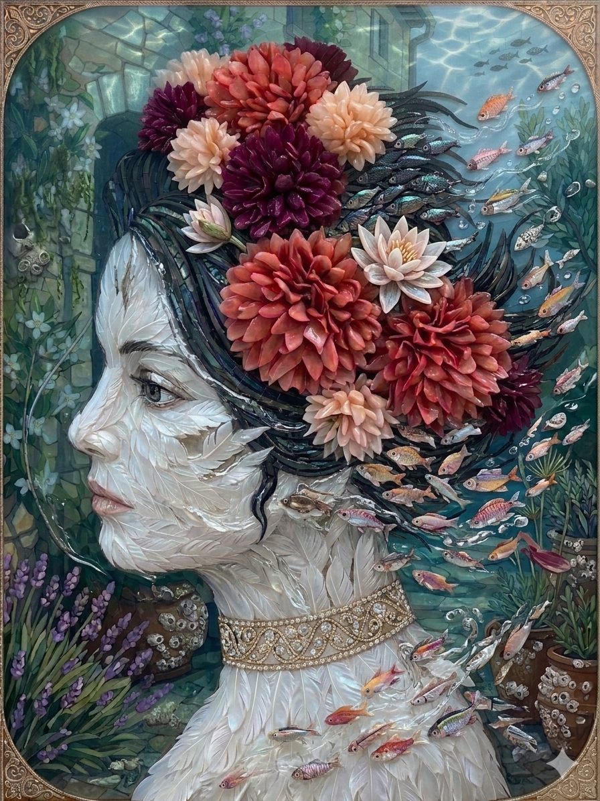

Conseils du jour
Les 7 prochains jours
Calendrier lunaire
Plan du potager
Les parcelles voisines (les lignes se suivent) sont contrôlées : un ⚠ signale deux plantes qui se supportent mal. Rotation : légumineuses → feuilles → fruits → racines.
Plantes et associations
| Plante | Type | S'entendent avec | À éloigner de | Semis |
|---|
Le jardin selon la lune
Lune montante et descendante
Montante (du solstice d'hiver à celui d'été) : la sève monte. On sème, on greffe, on récolte fruits et graines.
Descendante : la sève descend. On plante, on repique, on taille, on bouture, on amende.
Lune croissante et décroissante
Croissante : on sème ce qui se consomme en feuilles ou en fruits.
Décroissante : on s'occupe des racines et des bulbes, on taille, on désherbe.
Les jours selon le signe de la lune
| Signe | Élément | Jour | À faire |
|---|